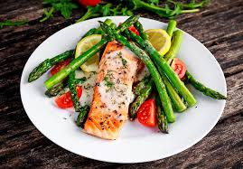

combines 2 or more ingredients to produce a homogenous mixture that can be replicated time.

A burger is a patty of ground beef grilled and placed between two halves of a bun

a popular meal among the Himalayas and is the unofficial national dish of Nepal.
Most burgers at restaurants or fast food outlets contain beef. The beef is ground and shaped into a patty.